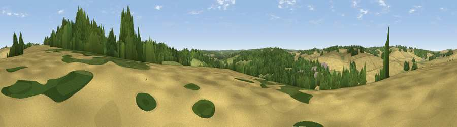

Viewpoint near Hampstead Norreys
#42074 in England · top 87% of its area beats it · near Hampstead NorreysThe view, rendered

A 360° render of this exact spot computed from the terrain model, tree cover and land cover — summer colours, afternoon light, calibrated against photographs of famous viewpoints. Real trees, hedges and buildings will differ in detail.
The panorama
Grey silhouette: terrain skyline in each direction (720 bearings, Earth curvature and refraction included). Dashed green: skyline with trees (+15 m) and buildings (+8 m) as obstacles. Blue strip: how far the ground is visible on each bearing.
Where the view opens
Wedge length = distance to the farthest visible ground on that bearing (vegetation-aware). Rings at 10, 25 and 50 km.
What fills the view
44% cropland · 36% woodland · 17% grassland · 3% built-up
Angular shares of the visible panorama (visual magnitude), not map area. Landscape diversity 0.49 (0–1 Shannon).
Key numbers
More beautiful places nearby
The staircase of upgrades: each row has a higher view potential than everything closer. Driving times are estimates from straight-line distance, calibrated against real road routing — check an actual route before setting out.
| Place | Direction | Drive | Score |
|---|---|---|---|
| Viewpoint near Compton | N · 3 km | ~7 min | 44.3 |
| Viewpoint near Compton | N · 6 km | ~12 min | 64.1 |
| Castle Hill | NNE · 16 km | ~29 min | 68.3 |
| Round Hill | NNE · 16 km | ~29 min | 70.1 |
| Watership Down | SSW · 20 km | ~34 min | 71.4 |
| Beacon Hill | SSW · 21 km | ~35 min | 76.7 |
| Martinsell viewpoint | WSW · 38 km | ~56 min | 77.3 |
| Viewpoint near Buriton | SSE · 59 km | ~82 min | 80.0 |
51.48697, -1.23340 · source: screening · position refined by local search. Computed location — check access rights before visiting.